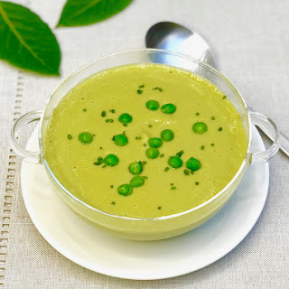

Nutritiva papinha de ervilha com batata amassada com o garfo para incentivar a mastigação do seu bebê. Veja que fácil!
1/2 cebola pequena picada
1 colher (sopa) de azeite de oliva
2 batatas médias picadas
Sal a gosto
1 litro de água
Refogue a cebola no azeite até dourar.
Adicione a batata, sal a gosto e a água e deixe cozinhar até ficar macia.
Junte a ervilha congelada e cozinhe por mais 10 minutos.
Amasse com um garfo e sirva morna.
Aproveite cada colherada desta deliciosa papinha de ervilha. Que cada sabor suave e reconfortante traga um momento de prazer e nutrição. Bom apetite!